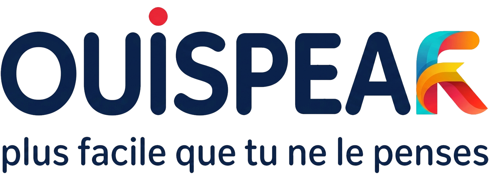

კურსები
სავარჯიშოები
ლექსიკა
ჩანაწერები
შეფასებები
გამოსვლა
სავარჯიშოებზე წვდომა
სტუდენტის ID (Student ID)
ელ-ფოსტა (Email)
პაროლი (Password)
შესვლა
ონლაინ სავარჯიშოები
აირჩიეთ კვირა
კვირა 1
კვირა 2
კვირა 3
კვირა 4
კვირა 5
კვირა 6
კვირა 7
კვირა 8
კვირა 9
კვირა 10
კვირა 11
კვირა 12
კვირა 13
კვირა 14
კვირა 15
კვირა 16
კვირა 17
კვირა 18
კვირა 19
კვირა 20
კვირა 21
კვირა 22
კვირა 23
კვირა 24
კვირა 25
კვირა 26
პასუხების გაგზავნა